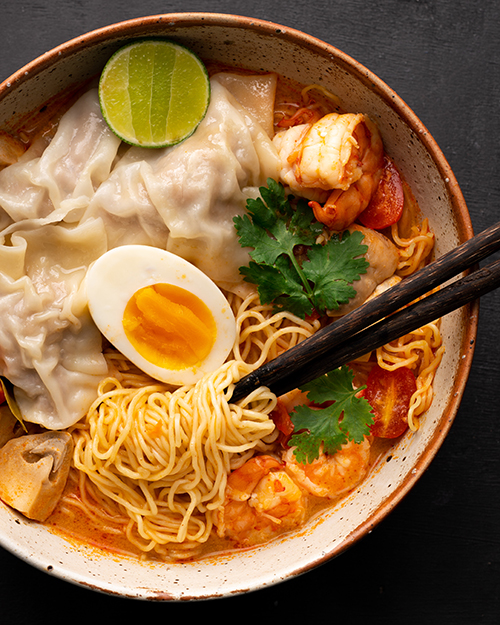

Tom Yum Noodle Soup

Tom Yum Noodle Soup is a take on the famous spicy soup from Thailand
Ingredients
- Shrimp
- Olive oil
- Water
- Fishballs
- Rice noodles
- Tom yum noodle paste
- Fish sauce
- Salt
Steps
- Boil rice noodles in a pot.
- Drain rice noodles in collander.
- Put olive oil in pot, stir fry shrimp for a bit.
- Add water to pot, wait until boiling.
- Put in some Tom Yum Paste
- Put in some fish sauce
- Put in fishballs, veggies, anything else.
- Cook a bit more, serve.